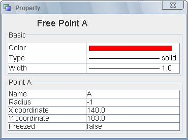
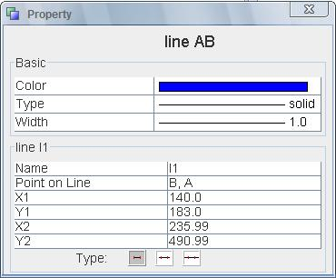

Property
This action popup the property dialog with which the user can view and edit the proeprty of an element.
Basic Property

- Color
This show the default color of current elements. The above image shows the basic property of a free point. The default color is RED.
- Type
This show the line type of the element. If this element doesn't use any line type( for example, a point doesn't have this attribute), then this property doesn't take effect.
- Width
This show the line width of the element. If this element doesn't use any line type( for example, a point doesn't have this attribute), then this property doesn't take effect.

The property of an point includes: Name, Radius, X coordinate, Y coordinate, Freezed.
Name: the name of the point. The name can be changed according to the user.
Radius: the radius of the point. The default radius is -1, indicating that this point use the predefined radius(4pt)
X coordinate: The x coordinate of the point.
Y coordinate: The y coordinate of the point.
Freezed: This decides if the point is freezed. Please refer the command Freeze for detail.

Name: the name of the point. The name can be changed according to the user.
Point on Line: List all the points which are on line.
x1, y1: the coordinate of the first point.
x2, y2: the coordinate of the second point.

Name: the name of the circle. The name can be changed according to the user.
Point on circle: List all the points which are on line.
Center: the point which acts as the center of the circle.
Center X : the x coordinate of the center.
Center Y : the y coordinate of the center.
Radius: The radius of the circle.
JGEX Help